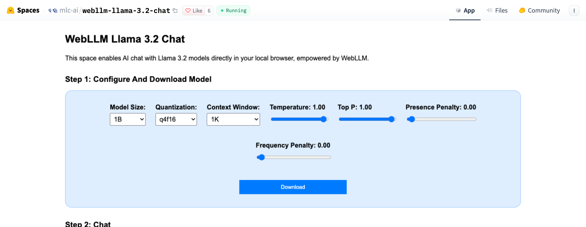
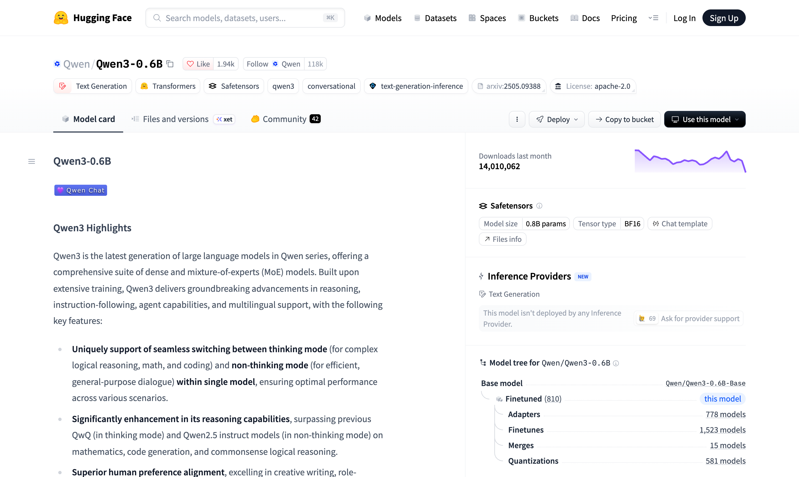

Small Models in the Browser
Running language models in JupyterLite with Python
Eric Van Dusen
College of Computing, Data Science, and Society, UC Berkeley
github.com/ericvd-ucb · Universidad Europea de Madrid
Why small models for a data science class
- No keys, no bills. A real language model with no account, API key, or per-token charge.
- Data stays local. Prompts and records never leave the student’s laptop.
- Opens from a link. JupyterLite runs entirely in the browser: no server, no install.
- Small enough to study. Tokens, sampling, templates, and failures are all open to inspection.
The aim is not a better chatbot. It is a model students can take apart.
What runs where
- Python calls into WebLLM through the Pyodide JavaScript bridge
- WebGPU gives the browser access to the laptop’s graphics chip
- The first load downloads the model; later loads read it from the browser cache
Requires a browser with WebGPU support, such as a recent Chrome or Edge.
Try it: WebLLM chat on Hugging Face

- Download a Llama 3.2 model into the browser, then chat with it
- Temperature and top p return later as Python arguments
huggingface.co/spaces/mlc-ai/webllm-llama-3.2-chat, built by the MLC team with WebLLM
Where models come from
From a research lab to a student’s laptop
From a lab to a laptop
- Pretrain. A lab trains a network to predict the next token on a large text corpus.
- Instruction-tune. Further training on dialogues teaches it to follow instructions and chat.
- Release. Weights, tokenizer, and a model card are published on Hugging Face.
- Quantize. Weights are compressed from 16-bit to 4-bit numbers.
- Compile. MLC turns the model into code that runs on WebGPU.
- Download. The browser fetches the files and caches them.
A model card on Hugging Face

Qwen3-0.6B from Alibaba’s Qwen team: huggingface.co/Qwen/Qwen3-0.6B
Reading a model name
Qwen3-0.6B-q4f16_1-MLC
| Part | Meaning |
|---|---|
Qwen3 |
Model family and version (Alibaba’s Qwen 3) |
0.6B |
0.6 billion parameters (the learned weights) |
q4f16_1 |
4-bit weights, 16-bit floating-point arithmetic |
MLC |
Compiled for the MLC and WebLLM runtime |
“Instruct” or “-it” in a name marks a chat-tuned model; a base model only continues text. The files live at huggingface.co/mlc-ai/Qwen3-0.6B-q4f16_1-MLC.
Choosing a model for a class
| Model | Parameters | Rough 4-bit size* | Good for |
|---|---|---|---|
| SmolLM2-360M-Instruct | 0.36 B | about 0.2 GB | Fast demos; seeing failure modes |
| Qwen3-0.6B | 0.6 B | about 0.3 GB | Default starter; visible reasoning |
| Llama-3.2-1B-Instruct | 1.2 B | about 0.6 GB | Solid general chat |
| Qwen3-1.7B | 1.7 B | about 0.9 GB | Better answers, still laptop-friendly |
| Phi-3.5-mini-instruct | 3.8 B | about 1.9 GB | Strongest here; needs a capable GPU |
*Estimate: parameters × 0.5 bytes. Actual downloads are somewhat larger. Start with the smallest model whose failures are still instructive.
The model card is a dataset card
- License: may it be used, modified, redistributed?
- Training data: what text, which languages, what cutoff?
- Intended use: what the developers built it for
- Limitations and bias: failures the developers report
- Evaluation: which benchmarks, compared against what
- Chat template: the exact format the model expects
For an open data class, the model card raises the same questions as any data source: provenance, license, and fitness for purpose.
The OpenAI chat interface
One request format across cloud, laptop, and browser
One call shape, three backends
In WebLLM the model is chosen when the engine loads, so the model argument is not used.
Connecting Python to WebLLM
import js
from pyodide.ffi import to_js
if getattr(js.navigator, "gpu", None):
print("WebGPU is available. You can run models.")
webllm = await js.eval("import('https://esm.run/@mlc-ai/web-llm')")
engine = await webllm.CreateMLCEngine("Qwen3-0.6B-q4f16_1-MLC")
def js_obj(d):
"""Turn a Python dict into a JavaScript object."""
return to_js(d, dict_converter=js.Object.fromEntries)
async def chat(messages, **settings):
"""Send a conversation and return the reply."""
request = js_obj({"messages": messages, **settings})
return await engine.chat.completions.create(request)Simplified from webllm_starter.ipynb, which adds a download progress bar and the browser model cache. All of the code is visible in the notebook.
Anatomy of a request
- Messages: the whole conversation, as a list of role and content pairs
- Settings: how each next token is chosen and when to stop
- Reply: the text sits inside a nested structure that must be unpacked
Three roles, one list
- system: sets behaviour for the whole conversation; written by the developer
- user: what the person types
- assistant: what the model said before
The model is stateless. Memory is the notebook resending the history on every turn.
Anatomy of a response
- choices: a list, because one request can ask for several replies
- finish_reason:
"stop"means the model ended;"length"meansmax_tokenscut it off - usage: token counts, the unit of cost, speed, and context limits
The harness
Before, during, and after the call: parsing input and output
The model is one function

- Before: turn data into a prompt
- During: run the call, measure it, handle errors
- After: turn text back into data, and check it
Most of the work, and most of the errors, sit outside the model.
Before: building the input
import pandas as pd
df = pd.read_csv("[dataset].csv") # open data with a free-text column
SYSTEM = "You extract fields from city service requests. Reply with JSON only."
def build_messages(text):
prompt = f"""Request: {text}
Return JSON with keys "category" and "urgency" (low, medium, or high)."""
return [
{"role": "system", "content": SYSTEM},
{"role": "user", "content": prompt},
]
messages = build_messages(df["texto"].iloc[0])- The prompt is a template; the data fills it in
- Check the fit (roughly one token per four characters of English), and use
temperature=0for extraction
During: running the call
- Every call is a measurement: time, tokens in, tokens out
- Students compare models and laptops with their own numbers
During: streaming and batches
Streaming: see tokens as they arrive
After: parsing the output
import json, re
def clean(text):
# drop a Qwen3 reasoning block, then any code fences
text = re.sub(r"<think>.*?</think>", "", text, flags=re.S)
text = re.sub(r"^```(json)?|```$", "", text.strip(), flags=re.M)
return text.strip()
def parse(reply):
choice = reply.choices[0]
if choice.finish_reason != "stop":
return None # cut off: do not trust it
try:
return json.loads(clean(choice.message.content))
except json.JSONDecodeError:
return None # count it as a failure- Small models often wrap JSON in fences or add commentary
- A failed parse is data too: record it rather than hiding it
After: checking and storing
ALLOWED = {"low", "medium", "high"}
def valid(fields):
return (
isinstance(fields, dict)
and isinstance(fields.get("category"), str)
and fields.get("urgency") in ALLOWED
)
parsed = [parse(r) if r else None for r in replies]
parsed = [p if valid(p) else None for p in parsed]
sample = df.head(20).copy()
sample["category"] = [p["category"] if p else None for p in parsed]
sample["urgency"] = [p["urgency"] if p else None for p in parsed]Text in, a table out: the result is ordinary data, ready for pandas.
Asking for structure
- The engine constrains generation so the reply matches the schema
- Valid JSON is not a correct answer: validation still applies
Backends spell this differently: the OpenAI API uses {"type": "json_schema", ...}.
Worked example: text in, table out
| texto | category | urgency |
|---|---|---|
| Farola apagada en la calle desde hace una semana | street lighting | medium |
| Contenedor desbordado frente al colegio | waste collection | high |
| Banco del parque con pintura descascarillada | park furniture | low |
Illustrative records. In class, use a free-text column from an open data portal such as datos.madrid.es or datos.gob.es.
Evaluating the harness
- Label a sample by hand, for example 30 rows
- Measure the parse rate and the accuracy
- Change one thing at a time: the prompt, the model, or the temperature
- Report failures alongside successes
The harness turns a demo into an experiment.
Behind the scenes
What happens inside a single call
What happens inside the call

The list of messages becomes one string with special tokens (Qwen’s ChatML format):
<|im_start|>system
You are a concise tutor.<|im_end|>
<|im_start|>user
What is a token?<|im_end|>
<|im_start|>assistantEach model family has its own template, which is why the model card matters.
One token at a time
- Score every token in the vocabulary (the logits)
- Rescale the scores by
temperature - Keep only the most likely tokens, up to
top_p - Sample one token and append it
- Repeat until a stop token, a
stopstring, ormax_tokens
Prefill reads the whole prompt in one pass. Decode produces one token per step, which is the tokens-per-second figure students measured earlier.
Temperature reshapes the odds
Next token after “The capital of France is”
| Token | T = 0.5 | T = 1 | T = 2 |
|---|---|---|---|
| Paris | 97.2% | 77.1% | 48.7% |
| Lyon | 1.8% | 10.4% | 17.9% |
| the | 0.7% | 6.3% | 14.0% |
| France | 0.2% | 3.8% | 10.9% |
| a | 0.1% | 2.3% | 8.5% |
Illustrative logits. At temperature 0 the engine always takes the top token.
The arguments worth teaching
| Argument | Values | What it does |
|---|---|---|
temperature |
0 to 2 | Randomness of each pick; 0 is greedy |
top_p |
0 to 1 | Sample only from the most likely tokens, up to total probability p |
max_tokens |
integer | Hard cap on reply length |
stop |
strings | Text that ends generation early |
seed |
integer | Repeatable sampling for the same model and settings |
stream |
true or false | Receive tokens as they are generated |
response_format |
JSON schema | Constrain the reply to valid JSON |
frequency_penalty, presence_penalty |
−2 to 2 | Discourage repetition |
logprobs |
true or false | Return token probabilities for inspection |
The notebook series
| Notebook | Section of this talk |
|---|---|
| Starter sampler | Why small models |
| Finding and picking models | Where models come from |
| The chat format: roles, settings, JSON reply | The OpenAI chat interface |
| Memory: a chat that remembers | The OpenAI chat interface |
| The harness: parsing input and output (new) | The harness |
| Tokens: numbers all the way down | Behind the scenes |
| SAT test taker | Evaluation |
github.com/ericvd-ucb/small-models-lite
Small models in the browser
A JupyterLite site where small language models run in the student’s browser through WebLLM, with no server, API key or installation.
- Talking to models and generation settings
- Tokens, chunking and embeddings
- Memory with SQLite and embedding search
- Inside an open-weight model package
Requires Chrome or Edge with WebGPU.
Takeaways
- Small models make the whole stack teachable, in a browser tab
- The OpenAI chat format is the common language across cloud, laptop, and browser
- The harness is ordinary data science: build inputs, call, parse, validate, evaluate
- Generation settings explain the failures students see in their own output
Questions and discussion
github.com/ericvd-ucb